Adott a feladat, miszerint szeretnénk hatalmas mennyiségű adat tárolását
megvalósítani. Természetesen kulcsfontosságú, hogy az adatokat rendezetten tároljuk, hiszen így az
alapműveletek (keresés, beszúrás, törlés) hatékonyan végrehajthatók. Első ötletként felmerülhet
például az AVL fák alkalmazása, azonban ezzel akadnak problémák.
Mivel szeretnénk ezt a rengeteg adatod hosszú távon eltárolni (adatbázis,
fájlrendszer, stb.), így egy véletlen elérésű háttértáron, pl. egy mágneslemezen kívánjuk őket
elhelyezni. Vagyis az adatok tárolása a másodlagos memórián történik.
Az elsődleges, közvetlenül elérhető memóriához képest (pl. RAM) a másodlagos
memória írási- és olvasási adatmozgatási sebessége jelentősen lassabb. Így az a célunk, hogy
ezen műveletek számát csökkentsük.
A háttértárak úgy működnek, hogy egyszerre az adatok egy egész blokkját,
jellemzően 4KB vagy 8KB mennyiségű adatot mozgatunk. Egy bináris keresőfa egy csúcsa viszont ennek
csak egy töredékét használná ki. Így már látjuk is, hogy az AVL fa miért nem jó választás. Ahhoz,
hogy minél kevesebb blokkot használjunk fel, olyan adatszerkezetre van szükségünk, amely jobban
kihasználja az ezek által biztosított területet. Ilyen a B+ fa.
B+ fa:
A B+ fa egy olyan adatszerkezet, ahol minden csúcs legfeljebb $d$ mutatót,
és legfejlebb $d-1$ kulcsot tartalmaz, ahol $d$ $(4 \le d)$ a fára jellemző állandó, vagyis a
B+ fa fokszáma. Ennek jelentőségét később tárgyaljuk.
Úgy tekintjük, hogy a belső csúcsokban mindegyik referencia két kulcs között van,
azaz egy olyan részfa gyökerére mutat, amiben minden érték a két kulcs között található.
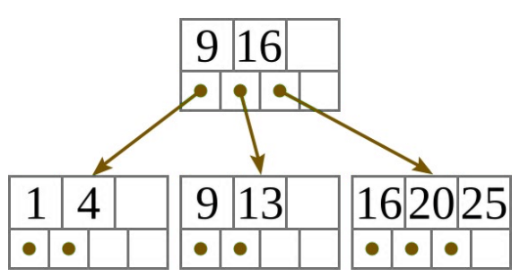
Az adatok a levélszinten vannak. A belső kulcsok csak hasító
kulcsok. Egy adott kulcsú adat keresése során ezek alapján tudhatjuk, melyik ágon keressünk
tovább. A levélszinten minden kulcshoz tartozikegy mutató, ami a megfelelő adatrekordra hivatkozik.
A leveleket a $d$-edik mutatókkal gyakran listába fűzik.
Ábrázolásai:
A B+ fákat ábrázolhatjuk vizuálisan lerajzolva vagy a bináris fákhoz hasonlóan
szöveges, vagyis zárójelezett formában. Ebben az esetben is érvényes a következő szabály: $( \space
balRészFa \space Gyökér \space jobbRészFa \space )$.
Az alábbi fa szöveges, vagyis zárójelezett formája: $\{[(1,4) 6 (9,10) 11 (11,12)] 13 [(13,15) 16
(16,20,25)]\}$
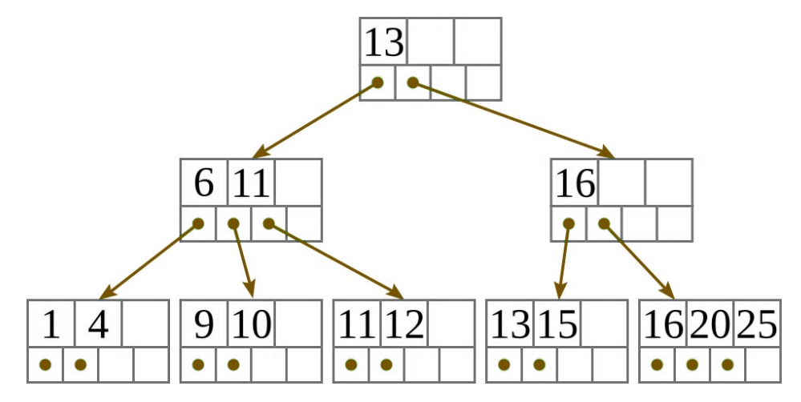
Invariánsok:
Tetszőleges $d$-ed fokú ($4\le d$ állandó) B+ fa a következő invariánsokat
teljesíti:
- Minden levélben legfeljebb $d-1$ kulcs, és ugyanennyi adatrekordra hivatkozó mutató található.
- A gyökértől mindegyik levél ugyanolyan távol található, vagyis minden levél azonos
mélységben, a legalsó szinten van. (tökéletesen kiegyensúlyozott keresőfa)
- Minden belső csúcsban eggyel több mutató van, mint kulcs, ahol $d$ a felső határ a mutatók
számára.
- Minden $N$ belső csúcsra (ahol $k$ az $N$ csúcsban a kulcsok száma):
- az első gyerekhez tartozó részfában minden kulcs kisebb, mint az $N$ első kulcsa
- az $i$-edik gyerekhez tartozó részfában $(2 \le i \le k)$ lévő tetszőleges $r$ kulcsra
$\text{N.kulcs}[i-1] \le r \le \text{N.kulcs}[i]$.
- az utolsó gyerekhez tartozó részfában minden kulcs nagyobb-egyenlő, mint az $N$ utolsó
kulcsa
- A gyökércsúcsnak legalább két gyereke van, kivéve, ha ez a fa egyetlen csúcsa.
- Minden, a gyökértől különböző belső csúcsnak legalább $\lfloor d / 2 \rfloor$ gyereke van.
- Minden levél legalább $\lfloor d / 2 \rfloor$ kulcsot tartalmaz, kivéve, ha a fának egyetlen
csúcsa van.
- A B+ fa által reprezentált adathalmaz minden kulcsa megjelenik valamelyik levélben, balról
jobbra szigorúan monoton növekvő sorrendben.
Fokszáma:
Egy $d$ $(4\le d)$ fokszámú B+ fa esetében minden csúcs legfeljebb $d$
mutatót, és legfejlebb $d-1$ kulcsot tartalmaz. Hogyan válasszuk meg $d$ értékét? A
$d$ értéke függ
- a kulcs méretétől,
- a mutató méretétől,
- a blokk méretétől.
Jelölje ezeket rendre $k$, $m$ és $b$, és tekintsük a
$k\cdot(d-1)+m\cdot d \le b$
egyenlőtlenséget. Ekkor az egyenlőtlenség bal oldala egy csúcs mérete $d$
függvényében, jobb oldala pedig a blokk mérete. Emlékezzünk, hogy a célunk ez utóbbi terület minél
jobb kihasználása. Ezt a lehető legnagyobb $d$ kiválasztásával érjük el.
Példa:
Tegyük fel, hogy egy blokk 4KB, a kulcsaink 4 byte-os egész számok, és mindegyik
mutató egy 6 byte-os relatív cím (a fájl kezdőcíméhez képest). Ekkor az
$4\cdot(d-1)+6\cdot d \le 4096$
egyenlőtlenséget megoldva $d\le 410$ adódik, így $d=410$ értéket választjuk.
A műveletigényről
Ha a fa magassága $h$, akkor $h \in O(\log n)$, viszont a gyakorlatban a fa $h$ magassága a $\log n$
érték töredéke:
$\log_d\left(\frac{n}{d-1}\right)\le h\le
\log_{\lfloor\frac{d}{2}\rfloor}\left(\frac{n}{2}\right)$
Tekinstük a korábbi példában kiszámolt $d=410$ fokszámot, továbbá legyen az
adatrekordok száma $n = 1.000.000.000$. Ekkor a fenti egyenlőtlenségből $2,4 \le h \le 3,8$ adódik,
azaz $h = 3$ (a fának 4 szintje van).
Egy ilyen fánál a felső két szintet az adatbázis megnyitásakor betöltjük a
központi tárba. A levélszintről viszont még egyet lépünk a tényleges adatrekord eléréséhez. Ez azt
jelenti, hogy egy-egy adat eléréséhez összesen háromszor olvasunk a lemezről, egymilliárd rekordot
tartalmazó adatbázis esetén. Ha pedig a keresett kulcsú rekord nincs az adatbázisban, csak kétszer
olvasunk a lemezről.
Beszúrás:
Ha a fa üres, hozzunk létre egy új levélcsúcsot, ami egyben a gyökércsúcs is, és
a beszúrandó kulcs/mutató pár a tartalma. Különben keressük meg a kulcsnak megfelelő levelet.
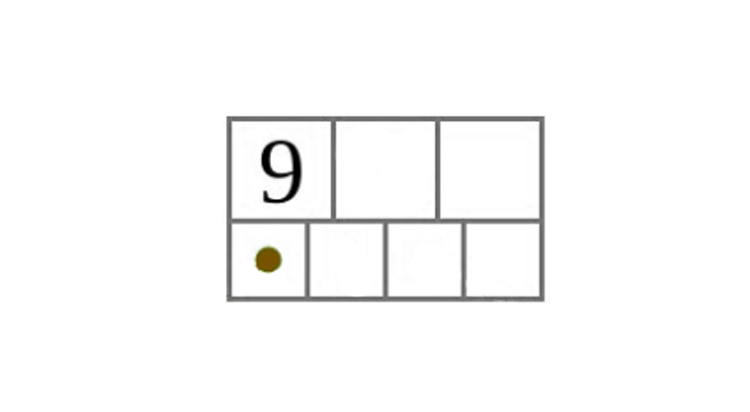
- Ha a levélben márszerepel a kulcs, a beszúrás sikertelen.
- Különben szúrjuk be a kulcs/mutató párt a levélbe.
Beszúrás a levélbe:
- Ha a csúcsban van üres hely, szúrjuk be a megfelelő kulcs/mutató párt kulcs szerint rendezetten
ebbe a csúcsba!
- Ha a csúcs már tele van, vágjuk szét két csúccsá, és osszuk el a $d$ darab kulcsot egyenlően a
két csúcs között!
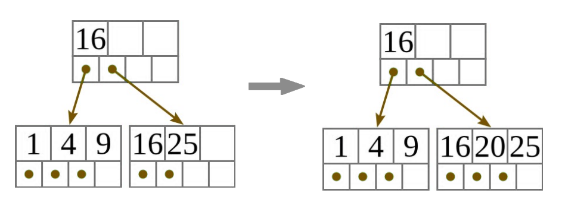
Szétvágás:
A szétvágás során minden esetben beszúrás történik a szülő csúcsba. Így,
ha kell, a szülő csúcsot előbb létrehozzuk. Ekkor a B+ fa magassága nő.
- Ha a csúcs egy levél, vegyük a második csúcs legkisebb értékének másolatát, és ismételjük meg
ezt a beszúró algoritmust, hogy beszúrjuk azt a szülő csúcsba!
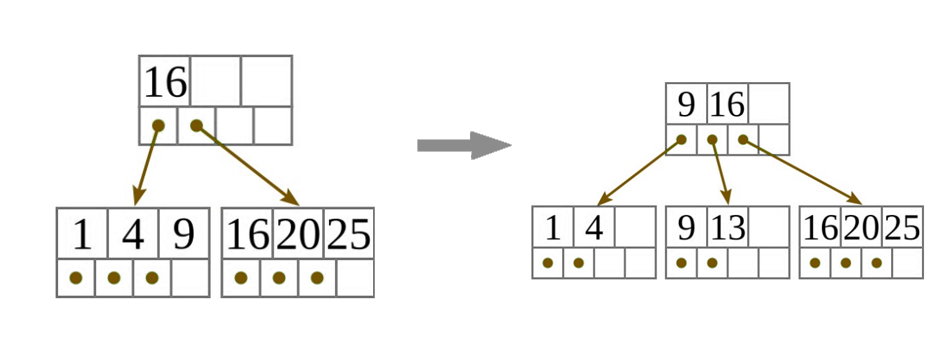
- Ha a csúcs nem levél, vegyük ki a középső értéket a kulcsok elosztása során, és ismételjük meg
ezt a beszúró algoritmust, hogy beszúrjuk ezt a középső értéket a szülő csúcsba!
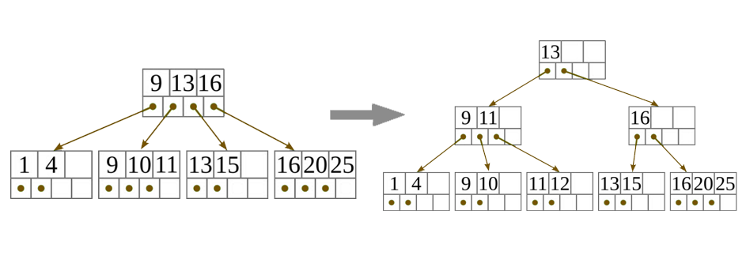
Törlés:
Keressük meg a törlendő kulcsot tartalmazó levelet! Ha ilyen nincs, a törlés
meghiúsul. Különben a törlő algoritmus futása során két út lehetséges:
- A keresés során megtalált levélcsúcs egyben a gyökércsúcs is.
- Töröljük a megfelelő kulcsot és a hozzá tartozó mutatót a csúcsból!
- Ha a csúcs tartalmaz még kulcsot, kész vagyunk.
- Különben töröljük a fa egyetlen csúcsát, és üres fát kapunk.
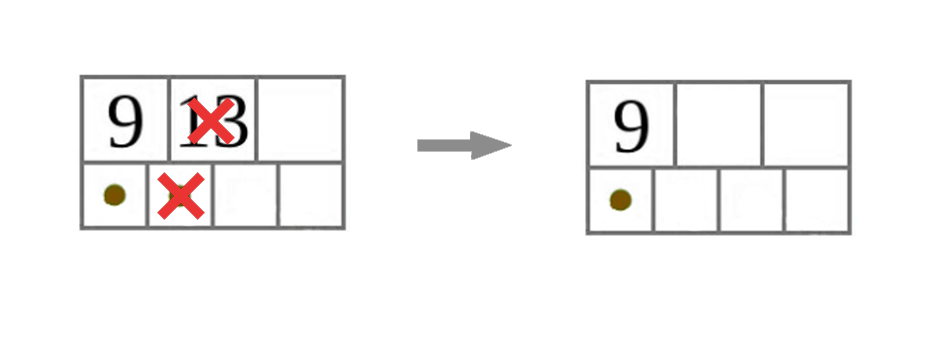
- A keresés során megtalált levélcsúcs nem a gyökércsúcs. Ekkor törlünk a levélcsúcsból.
Törlés levélcsúcsból:
- Töröljük a megfelelő kulcsot és a hozzá tartozó mutatót a levélcsúcsból!
- Ha a levélcsúcs még tartalmaz elég kulcsot és mutatót, hogy teljesítse az invariánsokat, kész
vagyunk.
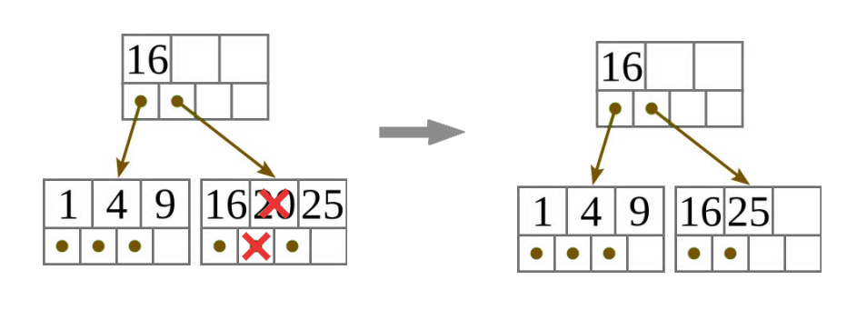
- Ha a levélcsúcsban már túl kevés kulcs van ahhoz, hogy teljesítse az invariánsokat, de a
következő, vagy a megelőző testvérének több van, mint amennyi szükséges, osszuk el a
kulcsokat egyenlően közte és a megfelelő testvére között! Írjuk át a két testvér közös
szülőjében a két testvérhez tartozóhasító kulcsot a két testvér közül a második minimumára!
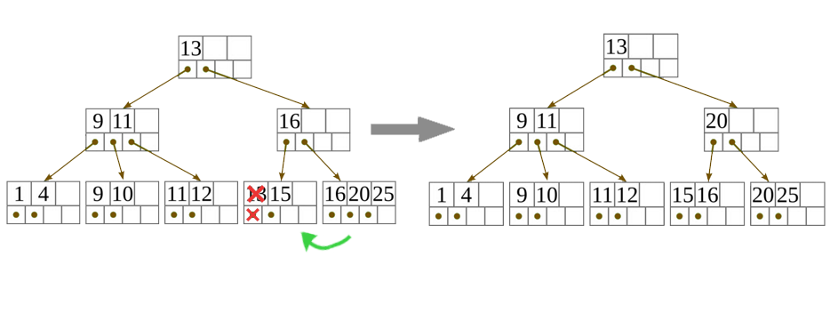
- Ha a levélcsúcsban már túl kevés kulcs van ahhoz, hogy teljesítse az invariánst, és a
következő, valamint a megelőző testvére is a minimumon van, hogy teljesítse az
invariánst, akkor egyesítsük egy vele szomszédos testvérével! Ennek során a két testvér közül a
(balról jobbra sorrend szerinti) másodikból a kulcsokat és a hozzájuk tartozó mutatókat sorban
átmásoljuk az elsőbe, annak eredeti kulcsai és mutatói után, majd a második testvért töröljük.
Ezután meg kell ismételnünk a törlő algoritmust a szülőre, hogy eltávolítsuk a szülőből a hasító
kulcsot (ami eddig elválasztotta a most egyesített levélcsúcsokat), a most törölt második
testvérre hivatkozó mutatóval együtt.
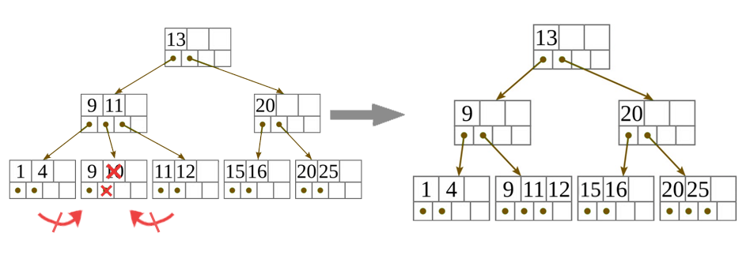
Törlés belső - gyökértől különböző - csúcsból:
- Töröljük a belső csúcs éppen most egyesített két gyereke közti hasító kulcsot és az egyesítés
során törölt gyerekére hivatkozó mutatót a belső csúcsból!
- Ha a belső csúcsnak van még $\lfloor \frac{d}{2}\rfloor$ gyereke, (hogy teljesítse az
invariánsokat) kész vagyunk.
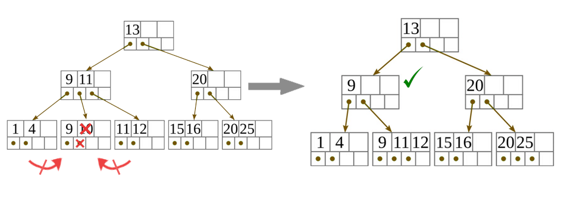
- Ha a belső csúcsnak már túl kevés gyereke van ahhoz, hogy teljesítse az invariánsokat, de a
következő, vagy a megelőző testvérének több van, mint amennyi szükséges, osszuk el a
gyerekeket és a köztük levő hasító kulcsokat egyenlően közte és a megfelelő testvére között, a
hasító kulcsok közé a testvérek közti (a közös szülőjükben lévő) hasító kulcsot is beleértve! A
gyerekek és a hasító kulcsok újraelosztása során, a középső hasító kulcs a testvérek közös
szülőjében a két testvérhez tartozó régi hasító kulcs helyére kerül úgy, hogy megfelelően
reprezentálja a köztük megváltozott vágási pontot! (Ha a két testvérben a gyerekek összlétszáma
páratlan, akkor az újraelosztás után is annak a testvérnek legyen több gyereke, akinek előtte is
több volt!)
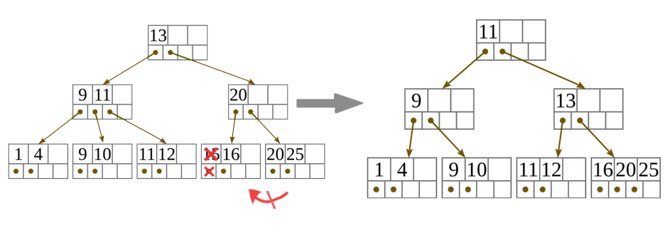
- Ha a belső csúcsnak már túl kevés gyereke van ahhoz, hogy teljesítse az invariánst, és a
következő, valamint a megelőző testvére is a minimumon van, hogy teljesítse az
invariánst, akkor egyesítsük egy vele szomszédos testvérével! Az egyesített csúcsot a két
testvér közül a (balról jobbra sorrend szerinti) elsőből hozzuk létre. Gyerekei és hasító
kulcsai először a saját gyerekei és hasító kulcsai az eredeti sorrendben, amiket a két testvér
közti (a közös szülőjükben lévő) hasító kulcs követ, és végül a második testvér gyerekei és
hasító kulcsai jönnek, szintén az eredeti sorrendben. Ezután töröljük a második testvért. A két
testvér egyesítése után meg kell ismételnünk a törlő algoritmust a közös szülőjükre, hogy
eltávolítsuk a szülőből a hasító kulcsot (ami eddig elválasztotta a most egyesített
testvéreket), a most törölt második testvérre hivatkozó mutatóval együtt.
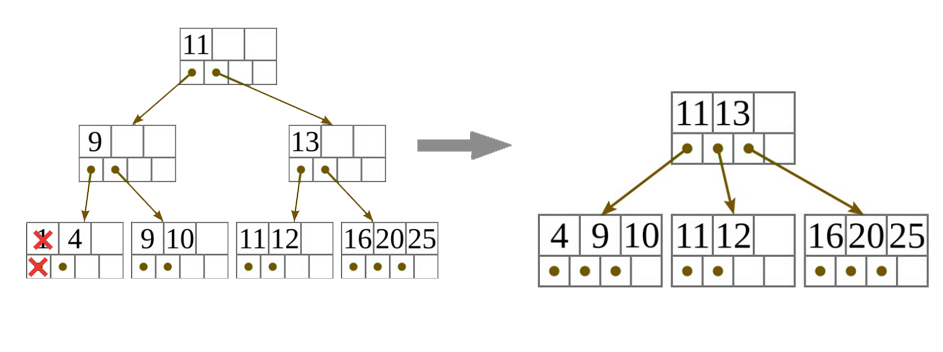
Törlés a gyökércsúcsból, ha az nem levél:
- Töröljük a gyökércsúcs éppen most egyesített két gyereke közti hasító kulcsot és az egyesítés
során törölt gyerekére hivatkozó mutatót a gyökércsúcsból!
- Ha a gyökércsúcsnak van még 2 gyereke, kész vagyunk.
- Ha a gyökércsúcsnak csak 1 gyereke maradt, akkor töröljük a gyökércsúcsot, és a megmaradt
egyetlen gyereke legyen az új gyökércsúcs! (Ekkor a B+ fa magassága csökken.)